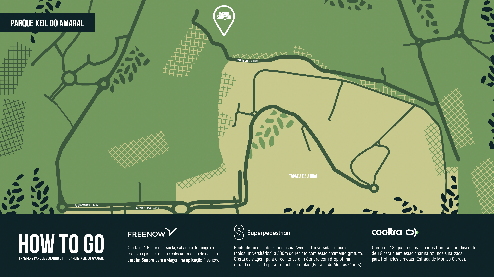
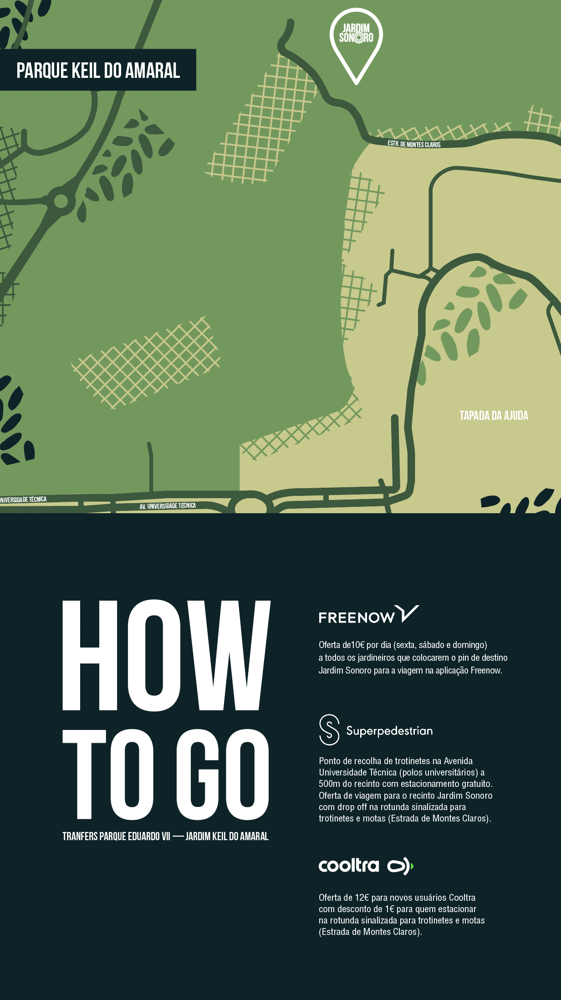

FILM
ABOUT US
A Three-day party "blessed" by Lisbon's incredible light. Jardim Sonoro is a compulsory event for music lovers who want to enjoy an urban experience in broad daylight with the city as center stage. A sounding garden from day to night. An experience to awaken the senses. A combination of heritage and music, tourism and culture, leisure and pleasure in one single concept, a day party in a garden we consider our own. Jardim Sonoro is this. More than this. The coolest party in the capital. A brand that stands out for its uniqueness. A special groove to be observed, heard and felt.
PARTNERS

HOW TO GO
 FAQS
Os bilhetes já se encontram à venda?
Sim, todas as tipologias de bilhetes já estão disponíveis no site www.jardimsonoro.pt ou na ticketline.
Quais as tipologias de bilhete existentes?
Passe de 3 dias, bilhete diário para cada um dos dias 9, 10 ou 11 de Setembro e bilhetes com acesso ao backstage.
Qual a idade mínima para entrar no recinto?
A idade mínima para a entrada no recinto sem a companhia dos encarregados de educação é 16 anos. As crianças até aos 14 anos não pagam bilhete desde que acompanhadas pelos pais.
Como posso efetuar a troca do passe de 3 dias ou bilhete diário por uma pulseira?
É obrigatória a troca do passe de 3 dias e dos bilhetes diários por uma pulseira para entrada no recinto nas bilheteiras do festival.
Para que serve a pulseira do festival?
A pulseira funcionará como meio para entrada e saída do recinto, sendo obrigatória sempre a sua validação à entrada e saída do festival. Caso saia do recinto sem validar a saída não poderá entrar novamente.
Como se pode consumir dentro do LISB-ON?
O sistema CASHLESS, dotado de um chip de leitura, será a única forma de pagamento dentro do recinto, dispensando assim o uso de dinheiro e diminuindo o tempo em filas de espera. O sistema cashless funciona através de 1 Pulseira para portadores de passe de 3 e bilhetes diários. O consumo de bebidas dentro do JARDIM SONORO LISB-ON depende da aquisição de um copo reutilizável, pelo valor de 1€. Valor não reembolsável. Será possível o pagamento com dinheiro ou cartão de débito, ou crédito e dinheiro até ao máximo de €200, de cada vez. Pode carregar a sua pulseira as vezes que quiser, nos pontos disponíveis para o efeito dentro do recinto.
Depois de trocar o meu passe por uma pulseira, posso deitar o meu bilhete para o lixo?
Não. Deve guardar sempre o bilhete consigo.
Existem multibancos para levantamento de dinheiro?
Não. Contudo é possível o pagamento com cartão para carregamento de pulseiras.
Quais as restrições à entrada do recinto?
Não é permitida a entrada dos seguintes objetos: • Bebidas • Comida • Objetos de vidro • Armas ou objetos perigosos • Máquinas fotográficas / filmar profissionais • Capacetes